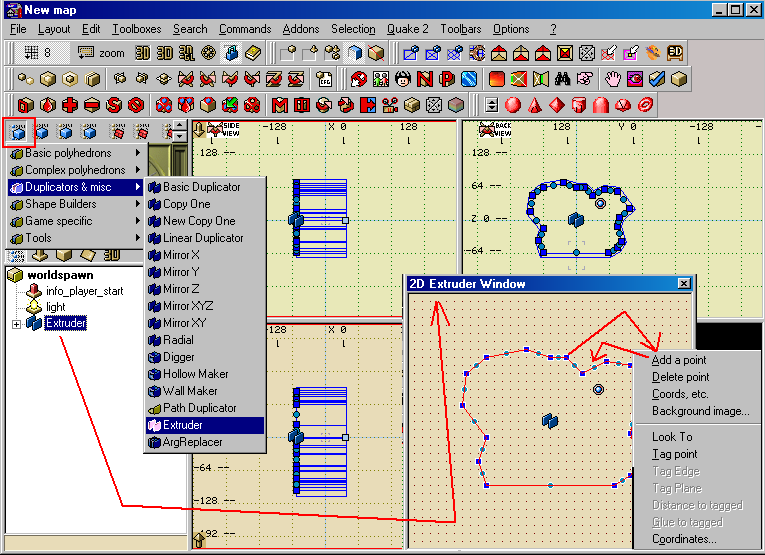
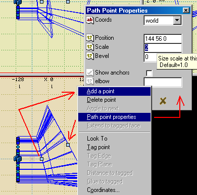

The extruder has overlapping functionality with the
'Path Duplicator', but lacks
some of its features, and has additional ones of its own (it's a different
kind of implementation, with different potential). Some significant strengths
of the extruder are:
- it has 2d editing facilities (either a special 2d editing window, or
circumference handles in a normal view) for controlling the shape of the
outline, which can be a hollow or solid (including concave) pipe, a patch
tube, or pipe with an outside square and inside complex outine).
- it has a variety of faclities for positioning path points with respect
to each other (rmb on the path points).
- it can automatically punch holes in things that it goes thru, both for the
inner and the outer circumference.
To texture, it, dissociate the images, arrange the textures on the first section,
then revert it back to being a duplicator.
If you want to use the extruder 2d/outline editing features in combination with
the features of the path duplicator, you can put a one-segment extruder into
a path-duplicator's template group, and the shape will be extruded along the
path.
|
Extruder use steps:
1) Click on the blue cube to open the Shape Builders menu and double click on Extruder to put one in the Tree view.
2) RMB click on it in the Tree view and select 2D view from the pop-up menu to get the 2D Extruder Window to shape it.
3) As you move the blue boxes around more green circles will appear and you move those to change the shape even more.
You can RMB click on a blue box, select Add a point to add more green points to use. Close the 2D Window when done.
|

|
|
4) In the editor, RMB click on the light blue square box at the other end of the extrusion poly,
select Add a point and a new section will be added to the poly. You use these light blue squares to drag to make the ploy
longer or angled.
5) If you select Path point properties on the RMB menu, another dialog will open Path Point Properties where you can enter
a Scale amount to flair or reduce the opening at that point of the poly.
There are other things you can do with it, so just play around with the properties settings and see what you come up with.
|

|
|